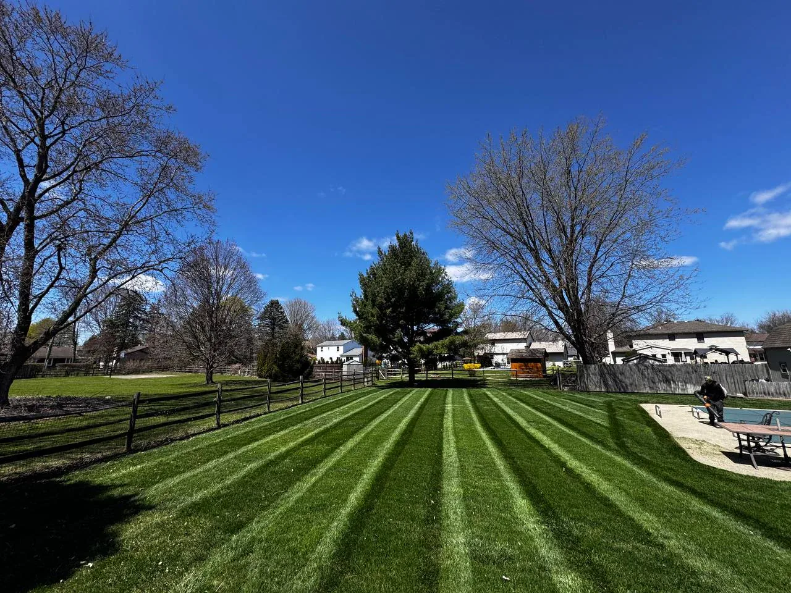

Home / Local Expertise
Northwest Ohio authority
Licensed and insured local expertise for Perrysburg, Toledo, Wood County, and Lucas County.
Terramorph serves residential, commercial, and industrial properties with trained team members who understand drainage diagnosis, hardscape durability, plant health, snow response, and Northwest Ohio soil and weather conditions.
 Google Verified
Google Verified
Local expertise
Locally owned, operated, licensed, insured, and trained for Northwest Ohio property problems.
Terramorph does not just send a mower and guess. The team includes licensed and insured professionals with certification-backed training, field experience, and the judgment to diagnose drainage, grading, plant health, hardscape base issues, maintenance needs, and seasonal property problems before recommending work.
See Our Local ApproachOfficial business information
The citation data Google, Meta, and directories should match.
Local platforms should use one clean version of Terramorph's name, phone, website, service area, and category. This keeps Terramorph's name, phone, website, service area, and category consistent everywhere homeowners may find the business.
- Business name
- Terramorph LLC
- Phone
- 419-873-6801
- Website
- terramorphllc.com
- Primary area
- Perrysburg, OH 43551
- Service area
- Wood County, Lucas County, Perrysburg, Toledo, Maumee, and Northwest Ohio
- Category
- Landscaping, hardscaping, drainage, lawn care, and outdoor property services
If a directory shows a different phone number, misspelled street variation, old business name, or incomplete category, it should be corrected to match this page.
Local service pages
Estimate information by city and project type.
Use these pages to review the most relevant Terramorph services for your city, then call Terramorph for a free estimate.
Landscape design, beds, cleanups, and outdoor upgrades for Toledo properties.
Terramorph helps Toledo homeowners and property owners clean up curb appeal, rebuild tired beds, plan better outdoor spaces, and connect landscaping with drainage, patios, lighting, and maintenance.
Open local page →Toledo · Drainage SolutionsDrainage solutions for wet yards, runoff, and standing water in Toledo.
For Toledo yards with soggy grass, low spots, roof runoff, or water moving toward hardscapes and foundations, Terramorph reviews the property and recommends practical ways to route water.
Open local page →Toledo · Paver Patios and HardscapesPaver patios, walkways, and outdoor living upgrades for Toledo homes.
Terramorph plans patio and walkway projects around base prep, drainage, transitions, access, and the way the backyard needs to work for hosting, grilling, and daily use.
Open local page →Perrysburg · Landscape DesignFinished landscape design and installation for Perrysburg homes.
Terramorph helps Perrysburg homeowners upgrade curb appeal, beds, patios, lighting, drainage, and maintenance so the whole property feels planned instead of patched together.
Open local page →Perrysburg · Drainage SolutionsPerrysburg drainage solutions for standing water, clay soil, and runoff.
Terramorph reviews grading, low spots, downspouts, lawn saturation, patio runoff, and discharge options before recommending drainage work for Perrysburg properties.
Open local page →Perrysburg · Paver Patios and HardscapesPaver patios and outdoor living spaces for Perrysburg backyards.
Terramorph builds patio and hardscape plans around how the family will use the space, how water moves, and how the patio connects to lawn, beds, steps, lighting, and walkways.
Open local page →Maumee · Landscape DesignLandscape design, beds, and property upgrades for Maumee homes.
Terramorph helps Maumee properties look cleaner, drain better, and feel more intentional with landscape design, bed installation, mulch, rock, lighting, patios, cleanups, and maintenance.
Open local page →Maumee · Drainage SolutionsDrainage solutions for Maumee yards with standing water or runoff problems.
Terramorph can review wet areas, downspout routing, grading, discharge options, and surrounding landscape conditions before recommending drainage work.
Open local page →Maumee · Paver Patios and HardscapesPaver patios, walkways, and hardscape upgrades for Maumee backyards.
Terramorph helps Maumee homeowners turn outdoor areas into usable patios, walkways, seating spaces, and finished backyards with drainage and base prep considered first.
Open local page →Priority service areas
Focused on Northwest Ohio.
Deeper planning
Service, proof, and high-intent planning pages.
All Terramorph Services
Full service hub for landscaping, patios, drainage, lighting, walls, cleanups, sod, mulch, snow, and commercial work.
Open services →ProofCase Study Hub
Local planning examples by city and service.
Open case studies →GalleryBefore and After Gallery
Central project-photo proof hub.
Open gallery →Why homeowners trust Terramorph
Local outdoor work backed by reviews, real project photos, and clear next steps.
Terramorph highlights 200+ five-star reviews, BBB accreditation, real project examples, and a Northwest Ohio service area so homeowners can choose with confidence before requesting an estimate.
★★★★★“Amazing service every time and prompt to all appointments.”
— CJ Miller
★★★★★“Great work at a fair price. They did what they said they were going to do, when they said they would do it. Fast, friendly. Will definitely use them again.”
— Richard Hansen
★★★★★“Ty and his team put hydro mulch down in my front yard and they did an excellent job. The grass is looking awesome! Thanks guys.”
— Derrick Fawley
Fast free estimate
Get a Local Property Estimate
Use the request form to send Terramorph the basics first, or call directly if the project is urgent.
Best next step
Send the project details, then Terramorph can follow up.
The quote page asks for name, phone, city, address, service type, timeline, and project notes so the crew has enough context before the first call.
- Good for landscaping, patios, drainage, lighting, cleanups, maintenance, and snow service.
- Works on mobile so homeowners can text the request details directly.
- Call 419-873-6801 anytime for urgent property issues or scheduling questions.
Local estimates
Tell us where you are and what you need done.
Whether it is drainage, design, a patio, cleanup, mowing, mulch, trimming, or bed maintenance, Terramorph can point you toward the right next step.